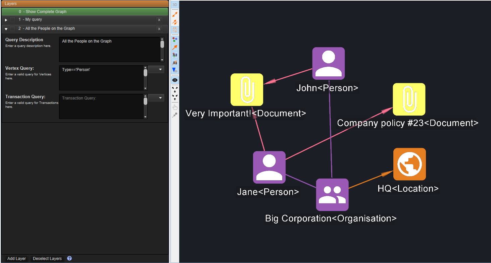
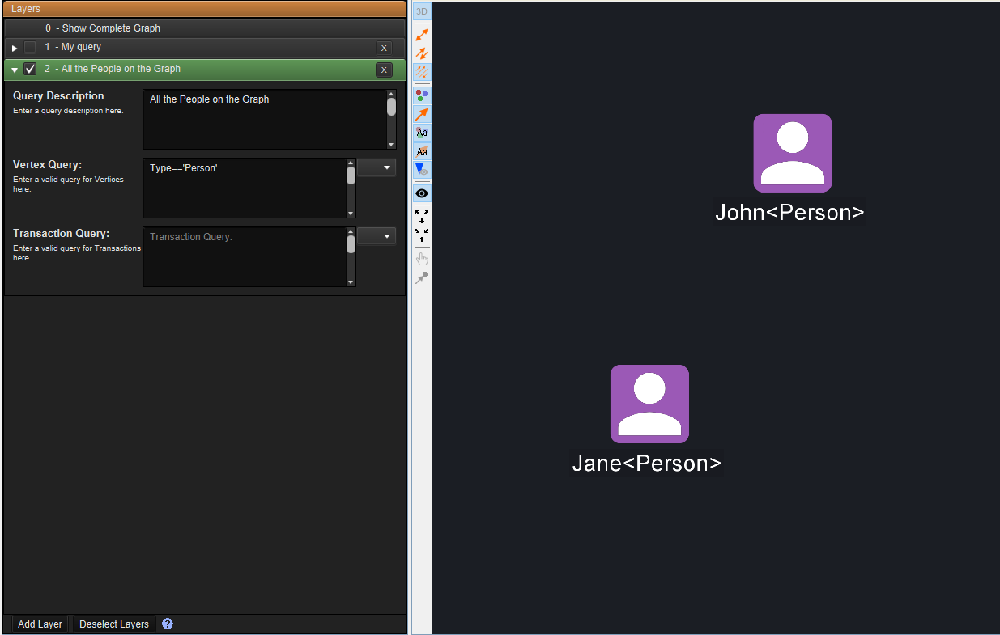
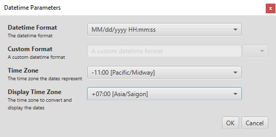

What's new in Constellation v2.8
Here is a list of changes we've added to this version of Constellation v2.8 which are also included in Constellation Cyber v1.7.
Layers View Enhanced Interface
Layers View has had a complete user interface rework and is now available under the Views menu.
This enhanced Layers View allows you to add vertices and transactions of up to 32 layers by either using the right click context menu or defining a query. The view allows for toggling of layers via a checkbox which links to subsets of graph elements. This will either hide or show the subsets based on element visibility changes to reduce clutter when analysing large data sets.
Having the new Layers View allows for graphs to be analysed from different perspectives to better determine relationships between entities.
 Active Graph Tab Enhancement
The Active Graph tab is now highlighted in blue to clearly distinguish it from the other tabs which is handy when there are numerous graphs open. This works with all of the different look and feel options that are available under Constellation options.
Timezone Enhancements
The File and Database Importers now have the ability to specify a timezone when importing datetimes that don't have one specified. Additionally, UX enhancements have been made, giving the ability to specify the preferred timezone to import datetimes in.
Import Graph File Plugin
A new plugin "Import Graph File" has been added to the Import section of Data Access View. This allows you to import data from graph file types such as GML, GraphML, and Pajek. This is now the way to import these file types with the existing “Import From GML File”, “Import From GraphML File” and “Import From Pajek File” plugins now removed.
Clear Button for Queries
The Database Importer now has a clear button next to the query button. Clicking Clear will remove both the results in the current run and the query text.
Several Bug Fixes
On top of the above new features and improvements, a number of bugs were also fixed. These include:
- Importing Epoch timestamps now import as seconds rather than milliseconds bringing Constellation in line with Unix standards
- Auto Notes in the Notes View are refreshing correctly
- The Welcome Page screenshots properly generate for graphs with the same name saved to different locations
Want to know more?
You can find out more information about the latest updates on the What's new page once you have installed version 2.8. There's loads of extra details available in the Release Notes and Change Log.
Would you like to learn more about how Constellation works?
There is a training package available on GitHub to learn how to make the most use of the various features in Constellation. There is also developer training for those seeking to deep dive into the underlying source code.
Contact Us
Do you have any feedback or suggestions for improvement? Noticed a bug? You can log an issue via the Help menu or clicking here.